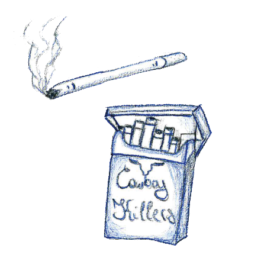

Geschreven door Jeroen
Schatjes, het was na wat dimsum, en we hadden een leuke tijd. De film had ons geïnspireerd, en het eten was lekker. We hadden thee gedronken. Op de tram leek het alsof we even de wereld vergaten. Iedereen was in zijn eigen wereldje, en wij waren gewoon ons leuke zelf, een beetje tipsy van de thee. De Nimf kreeg een joepiegevoel. Ze begon aan de palen van de tram te dansen. Wij lachten. Niemand keek op.We waren onzichtbaarin de versplinterde realiteit die door schermen wordt gecreëerd. We zaten allemaal samen in tram 2, maar niemand leek dat door te hebben. Je denkt meteen: ‘Kijk hoe verslaafd ze zijn aan die schermen, terwijl wij dat niet zijn.’ Maar vergeet niet dat jij ook constant met je eigen scherm bezig bent. Is verslaving niet gewoon een zoektocht naar rust en controle? Maar hey, laten we terugdenken aan dat beeld van die dansende Nimf. Pure en ondeugende slay-actie, toch? van vandaag!...
GENOEG GELEZEN !
Reacties
Gebruiker1: Een geweldig artikel! Waarschijnlijk moet ik ook beginnen roken...
Gebruiker2: Zeer interessant, bedankt voor het delen, maar de intresse ontbreekt me om te stoppen. #Marlboro4Life!